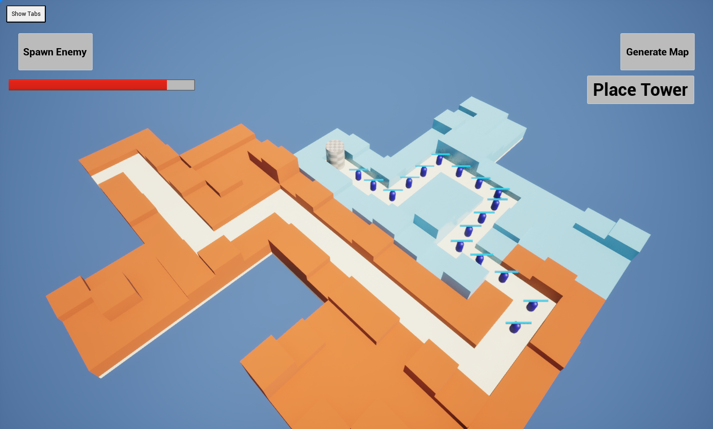
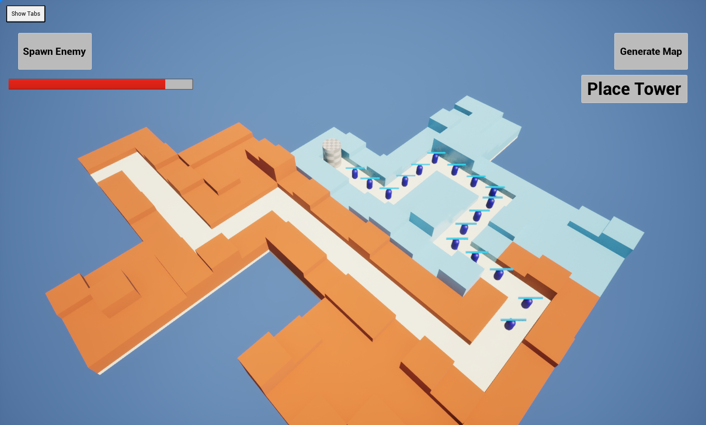

TowerCG
 

Build your deck of cards that allow you to place, upgrade, and destroy towers to defend against waves of enemies in a procedurally-generated tower defense game. Navigate a map of nodes to find the best path to victory, and use your resources wisely to build the best deck possible.
TowerCG is a personal project that has been at the back of my mind for a while. It is still in the development stages, and I am working on it in my free time when I need a break from Project Mars. The map sections are procedurally generated with a random biome and a random path that is ensured to never wind back into itself using a directed graph, depth-first search, and breadth-first search algorithms. The deck-building system is still in the works, but it uses a purely data-driven approach to allow for easy balancing, quick iteration, and the ability to add new cards without changing any code.